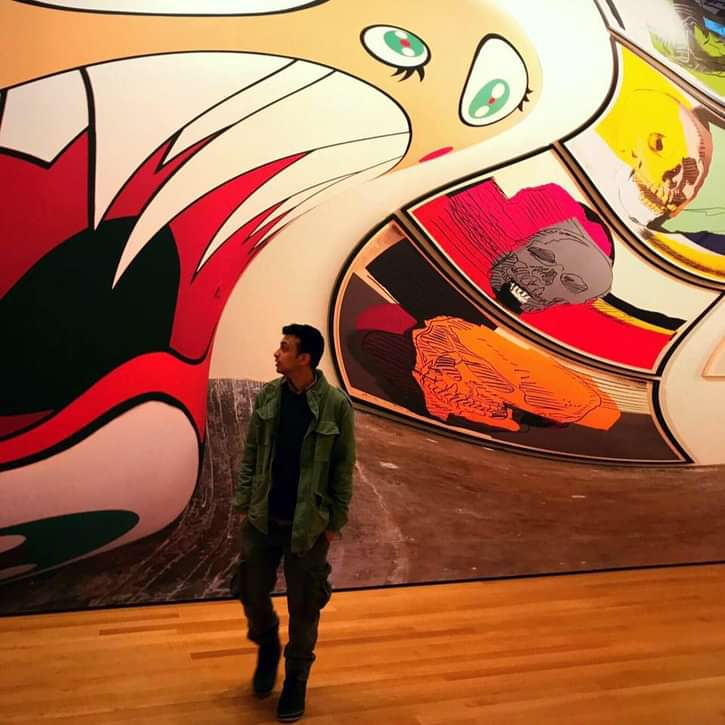
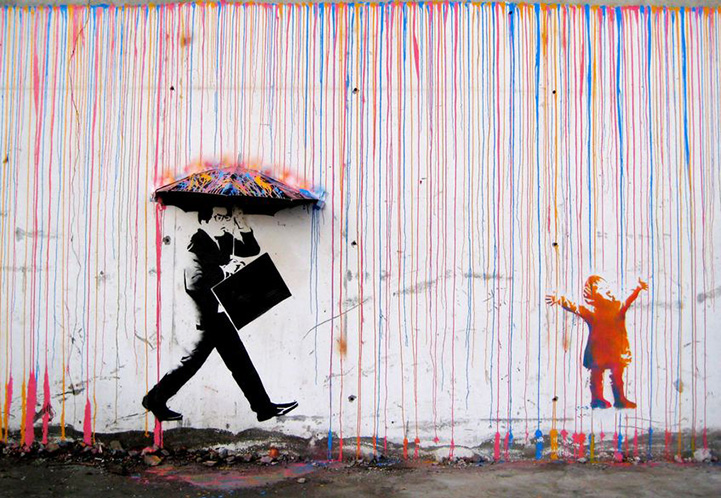
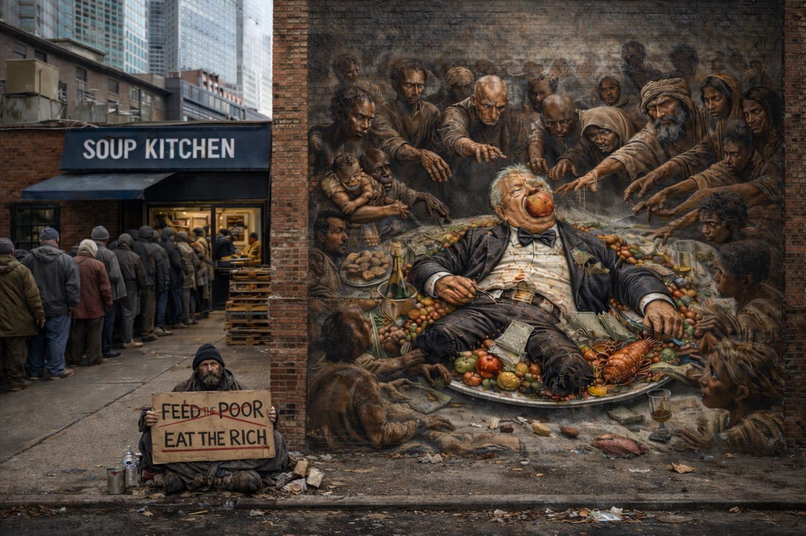
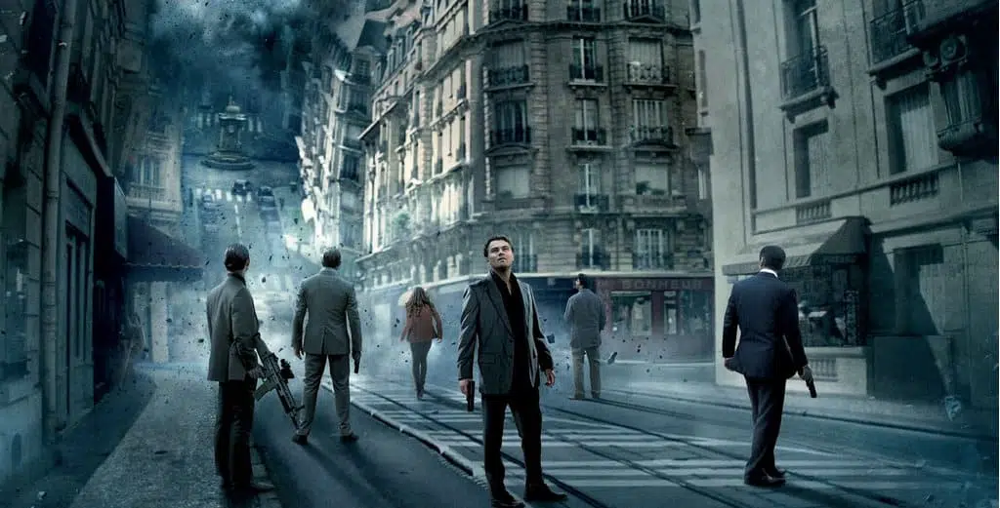
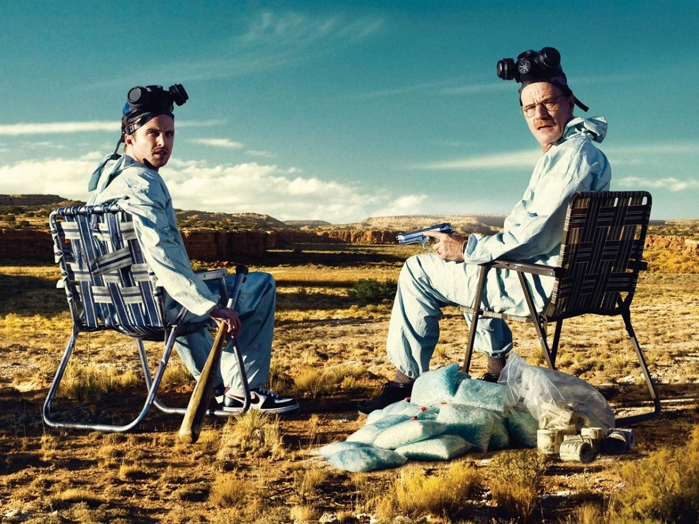
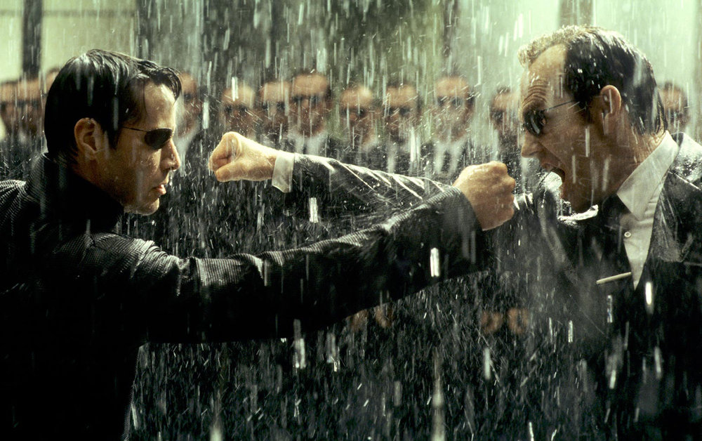
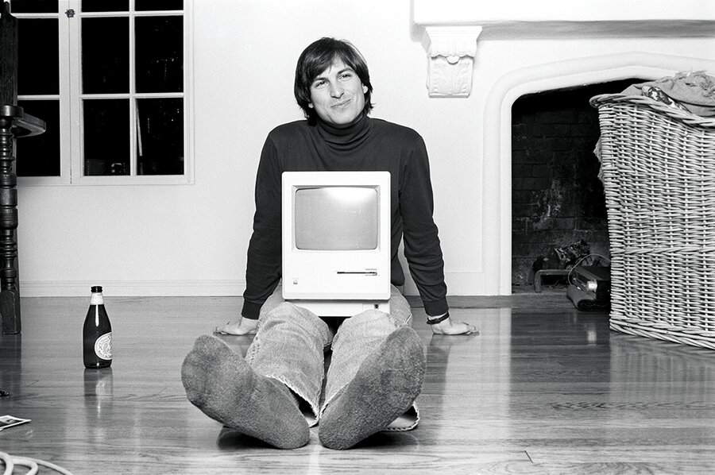
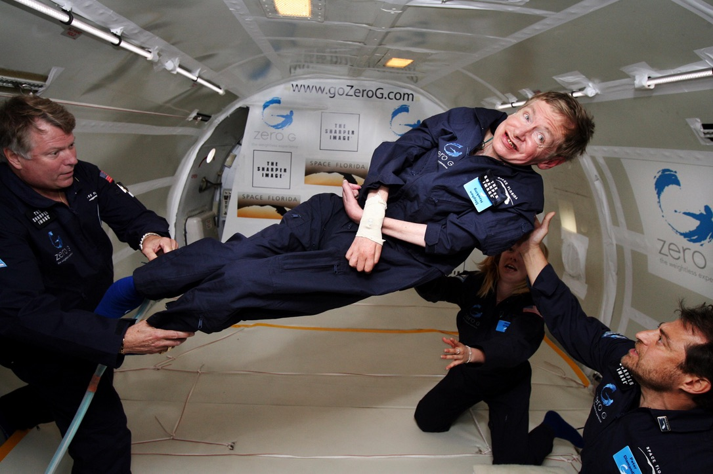
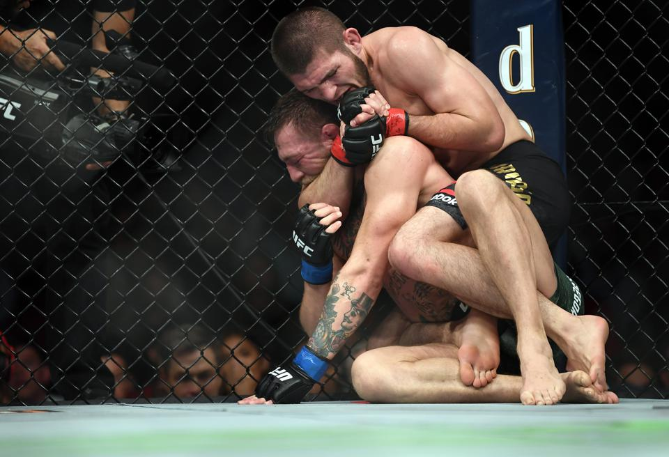
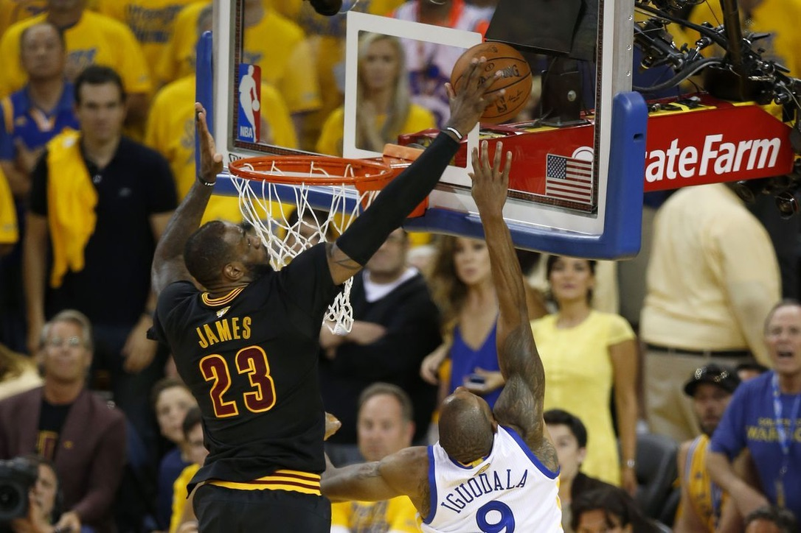

AI / NLP
LLaMA RAG Chatbot
Locally hosted AI chatbot using LLaMA, Retrieval-Augmented Generation, and Flask. Built for the Air Force Research Lab with no internet required.
PythonLLaMAFlaskRAG
Queens, NYC
My purpose is simple: protect my family, and use technology to make a real difference. Whether that means helping students reach a better quality of life, or contributing to the fight against global inequality, I want the work I do to matter beyond the screen.

After high school, while most of my peers started college, I was working full time to bring my family over from Bangladesh. Education was something I had to put on hold. What followed was over a decade of building myself from the ground up. I started as a cashier, moved into the restaurant industry, and eventually grew into a Finance Manager, Business Development Manager, and Assistant General Manager at a dealership I helped grow from 15 to over 60 cars a month.
When COVID-19 closed that chapter, I chose to see it as an opportunity. I went back to school for Computer Science because technology had always interested me and I wanted to engage in a field that would push me to keep growing. Since then I have interned at the Air Force Research Laboratory building a locally hosted AI chatbot, built a Tableau dashboard on food insecurity, and am currently a Fellow in the AI Engineering Principles track with Justice Through Code, a Columbia University program. Today I am finishing my Bachelor of Science in Computer Science at Queens College and serving as a Teaching Assistant at LaGuardia Community College, the place that gave me my first shot at this path.
What drives me is personal. Growing up in Bangladesh and in Queens, I have seen firsthand what it looks like when people lack access to resources and opportunity. I want to use technology to help close that gap, whether by building useful tools, using data to uncover real problems and find solutions, or contributing to organizations making a lasting difference in people's lives. That purpose is what pushes me to keep learning and growing every day.
Justice Through Code × Columbia University
Currently completing an AI Systems Engineering fellowship through Justice Through Code at Columbia University. Building my technical foundation from the ground up, starting with Python fundamentals and progressing through data science tools including NumPy for numerical computing and Pandas for data manipulation and analysis. Developing hands-on experience applying these tools to real-world problems in AI and machine learning.
Air Force Research Lab (AFRL)
Designed and developed a secure, locally hosted AI chatbot to streamline the onboarding experience for new hires at the Air Force Research Laboratory. Powered by Meta's LLaMA model via Ollama, the system ran entirely offline without reliance on external APIs or cloud services, a critical requirement in a security-sensitive government environment. Built a full-stack solution featuring a floating widget front-end and a Python/Flask back-end, with local Retrieval Augmented Generation to deliver accurate, context-aware responses from internal documentation. Embedded within Google Sites using custom scripting, with a focus on data privacy, offline performance, and long-term maintainability.
LaGuardia Community College
As a former LaGuardia student now pursuing my Bachelor of Science at Queens College, I came back to give what was given to me. I support students through the early stages of their academic journey, offering guidance, encouragement, and the perspective of someone who has been exactly where they are sitting.
Great Neck Car Buyers & Sellers
Grew into the Assistant General Manager role through years of dedication and proven results. Worked closely with the General Manager to oversee daily operations across sales, finance, and business development, making sure the standards and culture we built were maintained at every level. Helped scale monthly sales volume by 50%, from 40 units to a consistent average of 60, while keeping the same people-first values that defined the dealership. Every decision was made with the team, the customer, and the integrity of the business in mind. The dealership eventually closed after a consistent decline in business due to the economic impact of COVID-19
Locally hosted AI chatbot using LLaMA, Retrieval-Augmented Generation, and Flask. Built for the Air Force Research Lab with no internet required.
Trained YOLOv8 to detect and classify car parts in real time. Combined a decade of automotive knowledge with machine learning.
Built a working Unix shell from scratch in C with pipes, I/O redirection, background processes, and built-in commands. Ran on Linux via UTM.
Multi-threaded file downloader using raw TCP sockets. Splits files into chunks, downloads in parallel, and reassembles. No libraries.
Digit recognition on MNIST using HOG feature extraction and an SVM classifier. Wrote a NeurIPS-format research paper on the results.
Interactive Tableau dashboard mapping food insecurity across NYC neighborhoods, built to support public policy advocacy.
I'm not just a developer. I'm a person first. Art, sports, film, street culture. Here's what's on my mind when the laptop is closed.

Banksy gets it. Art that lives on walls, not in galleries.

Art that says what people are thinking but won't say out loud.
The Scream. Still relevant. Maybe more than ever.

Inception. The movie that made you question what's real.
Interstellar. Nolan at his best. Science, emotion, and awe in one film.

Breaking Bad. The greatest character arc ever written. Period.

The Matrix. Changed how the world thinks about reality and code.

Jobs before the billions. Just a guy and a machine, building something new.

Hawking in zero gravity. Proof that nothing limits a curious mind.

Khabib. Discipline, preparation, and dominance. No shortcuts.

The block. Game 7. Cleveland. One of the greatest moments in sports history.
Zidane. The most iconic moment in World Cup history. No notes.
Open to internships, entry-level roles, and interesting collaborations. Send me a message and I'll get back to you.